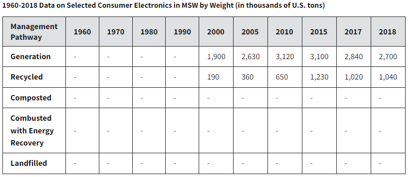

The Enviornmental Protection Agency has collected data from 1960-2018 about the total number of tons of electronics gathered, recycled, composted, and combusted with energy recovery and landfilled.
This is one of the main examples of how much electronics has been generated and recycled. However, the EPA hasn't collected data of electronics in landfills.
This data only selects consumer electronics including TVs, VCRs, DVD Players, Video Cameras, Stereo Systems, and Telephones and Computer Equipment.
Keep in mind that technology cannot be composted and combusted with energy recovery. Landfilled data also is not shown as the EPA hasn't collected data of electronics.
Data taken from the United States Enviornmental Protection Agency | National Center for Electronics Recycling; Statistsa and Appliance Design Magazine
Looking at the years of 2000-2018, only less than or half of electronics generated are recycled properly. That is a huge number of tons of technology that has been lost from production.
Technology is recyclable. These parts can be reused to create new technology or be used for other materials, instead of mining parts in the Earth.
This is important to see as your old phone could've been reused or scrapped for parts so that other people could've used it to recreate or build new tech for the future. Instead of you throwing it away since you may have thought that they were "disposable".